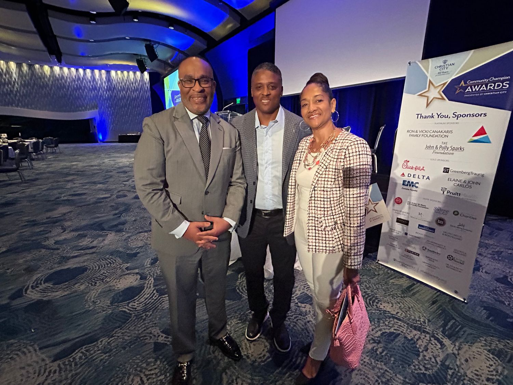
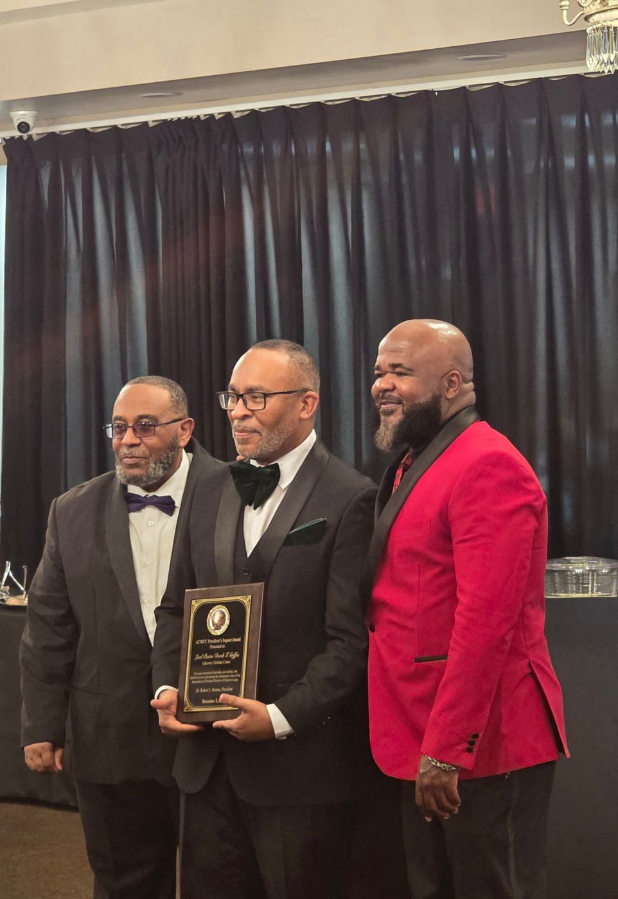
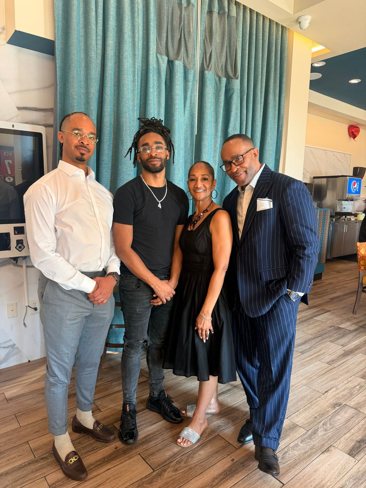
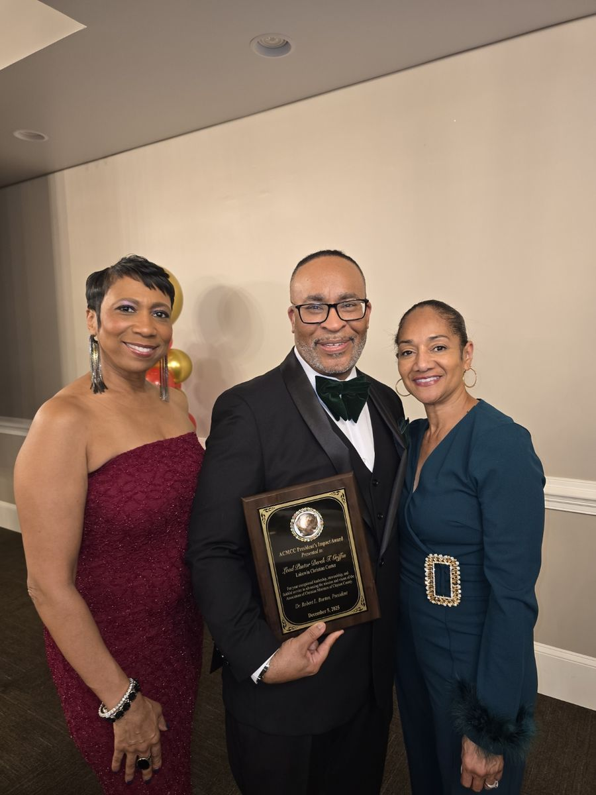
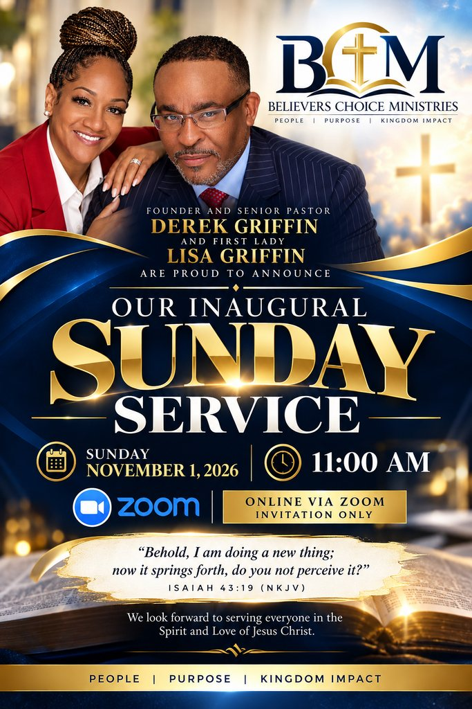

People
A welcoming family where everyone is known, strengthened, and sent. Families, leaders, and the next generation, growing together.
Founder and Senior Pastor Derek Griffin and First Lady Lisa Griffin invite you to the beginning of a ministry built on people, purpose, and Kingdom impact.
We are a people who choose. We choose truth over tradition. We choose faith over fear. We choose obedience over convenience. We choose Christ.
Walk in the abundant life God designed for you, from the inside out.
Make Jesus the center of your home, your work, and your decisions.
Advance God’s Kingdom with authority in every sphere of life.
A welcoming family where everyone is known, strengthened, and sent. Families, leaders, and the next generation, growing together.
Every believer has a God-given assignment. We help you discover your identity in Christ and walk it out with clarity and confidence.
Faith that shows up in homes, classrooms, boardrooms, and neighborhoods, and leaves people better than we found them.
Through practical, biblical teaching, we equip believers to grow spiritually and to thrive educationally, culturally, civically, and economically.
Disciple-making rooted in Scripture, prayer, and honest self-examination.
IIMentorship, learning, and scholarship partnerships that open doors for the next generation.
IIIKnowing who you are in Christ, and celebrating the heritage and gifts you carry.
IVFaith in public life: community initiatives that expand opportunity and support lasting progress.
VStewardship, careers, and enterprise. Building wealth with wisdom and giving with purpose.




After more than 27 years of ministry, Pastor Derek and First Lady Lisa Griffin are planting Believers Choice Ministries in Fayetteville, Georgia: a church for people who choose Christ, and choose to grow.
To equip and empower believers to boldly choose Christ, walk in uncompromising biblical truth, and advance God’s Kingdom with authority in every sphere of life.
To raise a global community of spiritually mature, Kingdom-minded believers who exercise godly choice, live victoriously, and transform families, communities, and nations.

Every day, believers face a choice: fear or faith, convenience or obedience, tradition or truth. Faith is not drifting into belief. It is deciding, again and again, to follow Christ.
Believers Choice Ministries exists to help people make that decision with confidence, and then live it out: at home, at work, in the community, and in the world.
Our guiding commitment is simple: disciple, inspire, and empower the people of God for Kingdom living, with humility, compassion, and a deep love for God and His people.
We are Believers Choice Ministries. We choose Christ. We choose truth over tradition. We choose faith over fear. We choose obedience over convenience.
Pastor Derek Griffin is the Founder and Senior Pastor of Believers Choice Ministries, Inc. in Fayetteville, Georgia. His mission is to disciple, inspire, and empower the people of God for Kingdom living.
Through practical, biblical teaching, he equips believers to grow spiritually and thrive educationally, culturally, civically, and economically.
With more than 27 years of ministry service, Pastor Derek leads with humility, compassion, and a deep love for God and His people. He is passionate about strengthening families, developing leaders, and helping people discover their identity and purpose in Christ.
An accomplished business leader, he is an insurance agency owner, commercial and residential developer, and executive leader with a global commercial and residential development firm based in Marietta, Georgia. He brings his experience and relationships into community initiatives that expand opportunity and support lasting progress.
He also serves as Secretary-Treasurer of the Association of Christian Ministers of Clayton County (ACMCC), partnering with ministry and community leaders to advance education, service, and empowerment.
Pastor Derek and his wife of 35 years, First Lady Lisa Griffin, are the proud parents of Darien, Blake, and Kennedy. Together, they are building a welcoming ministry where people can grow in faith, experience meaningful fellowship, and live with Kingdom purpose.
Presented in December 2025 for exceptional leadership, stewardship, and faithful service in advancing the mission and vision of the Association of Christian Ministers of Clayton County.
First Lady Lisa Griffin serves alongside her husband, Founder and Senior Pastor Derek Griffin, at Believers Choice Ministries, Inc. in Fayetteville, Georgia. She brings a heart for service and a passion for equipping people to grow in faith, recognize their potential, and pursue their God-given purpose.
An Atlanta native, Lisa is a licensed REALTOR®, life and health insurance agent, and Human Resources professional with more than 20 years of experience helping major companies identify and attract top talent while empowering individuals to achieve their career goals.
Her interests include professional development, training, youth coaching, personal image, and presentation. Through mentorship, encouragement, and practical guidance, she helps others build the skills and confidence needed to thrive in today’s competitive marketplace.
Raised by a father who served as an African Methodist Episcopal (AME) minister and a mother who was an educator, Lisa’s foundation is rooted in faith, service, and education. She believes in leading by example and preparing the next generation for success. Her guiding conviction is that in everything we do, we should trust God to guide our steps.
Lisa and Pastor Derek have been married for 35 years and are the proud parents of Darien, Blake, and Kennedy. Together, they are building a welcoming ministry that strengthens families, nurtures meaningful relationships, and empowers people to live with faith and purpose.
Pastor Derek and First Lady Lisa have built their marriage, their family, and their work on faith, and now they are building a church home for yours.
Our teaching is practical and biblical. Our goal is a whole life: growing in faith and thriving in the places God has placed you.
Practical, biblical teaching and disciple-making that moves you from hearing to doing. Built on prayer, the Word, and honest self-examination.
Mentorship and learning for every age, and partnership with the Association of Christian Ministers of Clayton County to advance scholarships and education.
Discover your identity and purpose in Christ, and honor the heritage, creativity, and gifts God placed in you.
Community initiatives that expand opportunity and support lasting progress, because faith belongs in public life.
Stewardship, career development, professional presence, and enterprise, from the marketplace to the boardroom.
Request an invitation to our inaugural service and meet the family.
Pastor Derek and First Lady Lisa are in their 35th year of marriage. They are passionate about strengthening families and nurturing meaningful relationships.
Developing leaders and preparing the next generation through mentorship, youth coaching, and practical guidance for confident living.
Before we correct, we pray. Intercession aligns our hearts with God’s heart, replacing judgment with compassion.
“First take the plank out of your own eye…” Matthew 7:5 (NIV). At Believers Choice, discipleship begins with a look in the mirror.
People follow those whose lives reflect the truth they preach.
1 Timothy 4:12
Blind spots distort how we see others. Examining ourselves replaces judgment with compassion.
Galatians 6:1
Having faced our own need for grace, we extend it rather than condemnation.
Romans 2:1
Self-examination is not a one-time event. It keeps the disciple-maker spiritually sharp.
2 Corinthians 13:5
Your life is your message. Accountability, mentorship, and transparency keep what we preach and how we live the same thing. 1 Tim 4:12
Before correcting another, pray. Intercession replaces judgment with compassion and agenda with love. Luke 22:32
The goal is not behavior modification. It is Christ-likeness. Point every disciple to Jesus. 1 Cor 11:1
True discipleship is relational. It takes time, patience, and the willingness to walk with someone through their process. 2 Tim 2:2
Commit to personal daily devotion and Scripture meditation.
Establish an accountability relationship with a spiritual mentor.
Conduct a regular personal inventory using 2 Corinthians 13:5.
Pray specifically for those you are called to disciple before engaging.
Lead with questions and listening, not answers and directives.
Model the transformation you are calling others to pursue.
Celebrate growth in others while remaining teachable yourself.
Where in your own life is God calling you to deeper transformation?
Is there a pattern, mindset, or wound affecting how you engage those you lead?
What spiritual disciplines are you actively practicing to maintain clarity and health?
Who is holding you accountable in your own spiritual growth?
How can this ministry build a culture where leaders model vulnerability and self-examination?
Our inaugural Sunday service is online via Zoom, by invitation. Request yours and we will send the details.
We look forward to serving everyone in the Spirit and Love of Jesus Christ.
Tell us who you are on the Connect page.
Our team sends you the Zoom invitation.
Log in a few minutes early and worship with us.
After our inaugural service, sermons and teaching from Pastor Derek will be posted here.
Founder and Senior Pastor Derek Griffin and First Lady Lisa Griffin are proud to announce the first Sunday service of Believers Choice Ministries. Invitation only.
Check back after our inaugural service for upcoming gatherings, classes, and community events.
Pastor Derek and First Lady Lisa have long poured into their community through education, service, and partnership. That work travels with them.
Pastor Derek serves as Secretary-Treasurer of the ACMCC, partnering with ministry and community leaders to advance scholarships, education, and empowerment. In December 2025 he received the ACMCC President’s Impact Award.
Helping the next generation step into college and career with support and encouragement.
Meeting real needs alongside local ministry and civic partners.
Using business experience and relationships to expand opportunity and support lasting progress.
Your generosity helps Believers Choice Ministries disciple, inspire, and empower people for Kingdom living, and serve our community from day one.
Giving details will be shared with our launch family. Request an invitation and we will make sure you are among the first to know.
Request your invitation to our inaugural service, ask for prayer, or tell us how you would like to serve.
We are grateful you reached out.